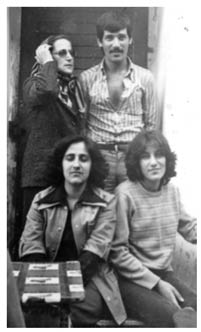
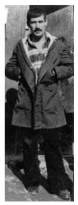
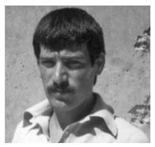

“Hayatında Hiç Mezarlığa Gitmemiş Birini Şanslı Buluyorsun. Çünkü Bizim Hiç Böyle Bir Şansımız Olmadı.”
Nesrin Karagülle41
Ağabeyim Necmi Karagülle liseden mezun olduğu dönemde Devrimci-Yol örgütü içerisindeydi. 12 Eylül sürecinden önce, 31 Temmuz 1977 tarihinde Artvin’de meydana gelen, kendisinin de içinde olduğu bir tartışma sonrası çıkan kavgada bir kişinin hayatını kaybetmesi nedeniyle tutuklandı. Hayatını kaybeden bu kişi de maalesef amcamın oğluydu. Amcamın oğlu MHP’li olmamasına rağmen, MHP’li birtakım arkadaşlarının yönlendirmesiyle

Necmi, annesi ve ablalarıyla birlikte
Artvin Merkez’de yürüyüşe çıkıyorlar. Orada nasıl bir ortam oluyor da kavgaya dönüşüyorsa, hayatını kaybetmesiyle son buluyor olay. Ağabeyim onu orada görmediğini, birebir onunla kavga etmediğini hep ifade etti. Mahkeme sürecinde de MHP’lilerin ifadeleriyle sanık durumunda oldu ve yargılandı. Davada 8-9 kişi vardı. Toplu kavga olması sebebiyle kısa süreli cezalar verildi. Ağabeyim ve bir diğer arkadaşı 4 yıl ceza aldılar.
Amcamın oğlu aslında bizim aileyle en yakın ilişkileri olan kişilerden biriydi ve ağabeyimin de çok sevdiği bir insandı. O, böylesi bir olayda zarar görünce ağabeyim “Ben Adil’in ölümünden dolayı aranıyor olmak istemiyorum” dedi ve teslim olmak istedi. Çünkü suçlu olmadığı bir durum sebebiyle kaçmak istemiyordu ve son derece de üzgündü durumdan dolayı. Bu yılgınlık veya korku sebebiyle almış olduğu bir karar değildi. Ağabeyim inançlı bir insandı ama inancı uğruna çok sevdiği bir insanın yok edilmesini isteyecek bir kişi değildi.
Tutukluluğu 2 yıldan fazla sürdü. Sonrasında 6 devrimci arkadaşının da içinde olduğu toplam 17-18 kişiyle birlikte cezaevinden firar etti (29 Ekim 1979). 1979’dan 1984’e kadar kaçak hayatı yaşadı. Darbeden sonra Ünye’nin Çiğdemli Köyü’nde 21 Haziran 1984’te yapılan askeri operasyonda hayatını kaybetti. Barındıkları evde, ihbar üzerine, etrafları sarılıyor ve iki arkadaşıyla birlikte vurularak ölüyor. Tabii aynı olayda yakalananlar da oldu.
Necmi’nin kaçak olduğu süreçte önce Artvin’de sonra Ankara’daydım ve kendisiyle hiç görüşemedim.
Artvin’de Hayat
Artvin’de babamın ve ağabeylerimin işlettiği bir toptancı mağazımız vardı. Ekonomik sıkıntımız yoktu. O tarihlerde babamın Ankara’da farklı bir iş yapma planları vardı ancak ağabeyimle ilgili bu olay olunca ve tutuklanınca o projeyi yarıda bırakmak durumunda kaldık ve Artvin’de yaşamaya devam ettik. Evimiz sürekli misafiri olan, hem akrabalarımız hem çevredeki insanlarımızla yoğun ve kalabalık bir evdi. Başka ilden misafir geldi mi, hep bizde toplanılırdı. Bunlar ağabeyimin olayıyla birlikte bıçak gibi kesildi. Sanki ortaya bir bomba atıldı ve herkes bir tarafa dağıldı. Herkes kendi çocuğuyla, kendi ailesiyle ilgili kaygılar yaşamaya başladı. İnsanlar kendilerine de zarar gelir düşüncesiyle bize yakın durmaktan korkar oldular.
Amcamın oğlu her ne kadar ağabeyimin çok sevdiği bir insan olsa da iki aile bir daha görüşmedi. O nedenle yaşadığımız yük çok ağır oldu. Hem aileden birisi olması sebebiyle hem de aileden bize gelip gidenlerin ikiye bölünmek durumunda kalmış olmaları sebebiyle çok zor zamanlar geçirdik. Akrabalar, birisine destek verirsem diğeri ne olur kaygısı taşıdı. O nedenle de biraz yalnız kalınan bir süreç oldu. Ailenin büyük bir kısmı sırtını döndü demek ne kadar doğru bir deyim olur bilmiyorum ama insanların belki de korkuları ağır bastı çünkü diğer taraf bize, aileye karşı baskı uygulamaya kalkıştı. Yolda görüyor saldırıyor, eve saldırıyor. Onların da acıları çok büyüktü. Dolayısıyla iki aile arasında kaldı insanlar. Buna rağmen gelmeye devam eden de oldu ama ailemin, özellikle de ağabeyimin devleti de karşısına alan bir duruşu olunca insanlar bu durumdan çekindikleri için tabii ki uzak durdular. Amcamın oğullarından bir tanesi bu olaydan sonra militan bir MHP’li oldu.
Annem ve babam CHP çizgisinde insanlardı ve CHP’nin kadrolarında çalışıyorlardı. Mesela babam, il yönetiminde, annem kadın kollarındaydı. Necmi ve ben siyaseten onlardan daha farklı bir noktaya gelince aile içinde de bazı çatışmalar oldu. Hatta ağabeyimin olayından sonraki dönemde Artvin’deki siyasi ayrılmalar da biraz daha yoğunlaştı. Ailem, anne baba kaygısıyla evlatlarının göreceği zarar noktasından baktıkları için benim siyaset içerisinde olmamı hiç istemediler. Sonuçta duygusal bakıyorlardı. Bir çocukları cezaevinde, sonrasında kaçmış; bir çocuklarının daha zarar görmesini istemiyorlardı. Beni korumak adına bana baskı uyguluyorlardı tabii ki. Diğer kardeşlerimiz bizim gibi siyaseten aktif değillerdi. Yakın aile çevresinden “bu işleri bırak, uğraşma, gittiğiniz yol yol değil” anlamında akıl verici, “Yaptıkların anneni babanı çok üzüyor, onları üzmeye hakkın yok” anlamında tepkiler oldu tabii ki 12 Eylül sürecinde. Ağabeyimle ilgili bana baskı yapılmıyordu ama ben de, mücadele içinde olmamdan dolayı tepkilere maruz kalıyordum. Boş bulanlar, hayalci bulanlar oluyordu. Zaman zaman doğru bir zeminde hareket etmediğimizi düşünüyorlardı büyükler. Onların bakış açısı, bunlar çil çocuk, koca devleti karşılarına alıyorlar mantığıydı biraz da.
Biz dört kardeşiz. Lise dönemindeydim siyasi mücadeleye başladığımda. 12 Eylül olduğunda ise 20 yaşındaydım ve liseyi bitirmiştim. Üniversiteye kayıt hakkım vardı ama siyasi olaylar nedeniyle okula kayıt yaptırmadım. Darbeden sonra gözaltına alındım ve dışarı çıktığımda artık Artvin’de yaşama şansım kalmamıştı. Yeniden gözaltına alınabilirdim. Aynı anda ağabeyim de kaçak olduğu için evimiz sürekli aranıyordu. Kapıya geliyorlardı, tekmeyi vurup giriyorlardı içeriye. Kitapları araştırıyorlar, evi karıştırıyorlar, haber var mı diye öğrenmeye çalışıyorlardı. Tüm bunlar yaşanırken yeniden gözaltına alınabilirdim, dolayısıyla şehirden ayrılmak durumunda kaldım.
Politik mücadelemiz ve bunun sonuçları sebebiyle toplumdan dışlandık diyemem ama insanlarda bir tedirginlik vardı diyebilirim. Artvin küçük bir yer olduğu için orada herkes birbirini tanıyor ama siyasi olarak bizim karşı düşüncemizde olan insanların tabii ki sıcak bakmadığı zamanlar oldu. Buna rağmen mahallede birçok kişi bize uzak durmadı, çok yakınımızda duran insanlar da oldu.
Artvin’den ayrıldıktan sonra Ankara’da teyzemin yanında kaldım bir süre. En büyük destek gördüklerimden biri teyzemdir. Ankara’da bir evimiz vardı, ağabeyimin olayları nedeniyle gelemediğimiz bu eve darbeden sonra yerleşmiş olduk. 6 ay sonra ailem de benim yanıma geldi. Yalnızca ağabeyim, eşi ve çocukları Artvin’de kaldı. O, işi devam ettirdi.
Biz 12 Eylül öncesinde de zaten sürekli evi aranan ve baskı gören bir aileydik. 12 Eylül sabahı, sokağa çıkma anlamında özgürlük bitti. Sonra da tabii bizim kapımız çalındı ve ben gözaltına alındım. Babam beni vermek istemedi, o da bizimle araca bindi. Polisler babama “ Gel, gel! Seni de kızınla birlikte atarız, yatarsınız içeride” deyince babam inmek durumunda kaldı araçtan. Çünkü kendi de içeri girerse bizi takip edecek, bize yardım edecek kimse kalmayacaktı. Kısacası bizim için özgürlüklerin bittiği bir gündü. Özgürlükler dediysem zaten yeterince özgürlük olmadığı için biz bunlara karşı duruyorduk ama var olan, en azından 11 Eylül günü yapabildiklerimizin bile gerçekleşemediği bir gün oldu.
Darbenin ardından ülkenin yaşadığı krizle de bağlantılı olarak birtakım ekonomik krizler yaşadık. Artvin’de daha öncesinde sürdürdüğümüz hayatın daha altında bir yaşam standardında yaşadık.
Operasyonun Ardından
Aileden hiç kimse Necmi’nin Fatsa’da olduğunu bilmiyordu. Bir gece haber geldi. Babam ve amcam (teyzemin eşi) gittiler Ünye’ye, oradan alıp getirdiler ağabeyimi. Hiçbir eşyası, kıyafeti, saati, bize teslim edilmedi. Ağabeyimi Ankara’da defnettik. Tabii normal bir defin süreci değildi. Mezarlığın girişinde, kenarda bir yerde tahtaların arasında bir yere koydular tabutu, çekiçle kapağını açtılar ve bize gösterdiler. Aileden herkes ağlamaya başlayınca polisler

Necmi Karagülle
müdahale etti. Ablamı susturmaya çalıştılar. Hiçbir isyanı kabul etmiyorlar, siz o anda canınızdan can kaybetmişsiniz ama onlar hiçbir tepkiyi kabul etmiyorlar. Ağlamanızı bile fazla görüyorlar çünkü insan gözyaşı dökerken duygularını çok saklayamıyor. Çok kalabalık değildi cenaze. Bu süreçlerde hep yanımızda olan insanlar orada da yanımızdaydı. Arkadaş çevremizden çok fazla kişi bulunamadı, Artvin’den Ankara’ya göç ettiğimiz için ve herkes benzer süreçler yaşadığı için kimse birbirini arayıp soramıyordu. Bazı arkadaşlarımızın daha sonra haberi olduğu için hemen arayamadılar. Dolayısıyla gelenleri toplasan 20’yi geçmezdi, onun da zaten yarısı aileydi. Bu süreçte bile cenazeye katılmaktan korku duyan akrabalarımız oldu ve tabii ki katılmadılar. Belki bazıları da ekonomik koşullar sebebiyle ya da uzakta olduğu için gelemediler.
Ankara Süreci
Öğrenciliğim bitmişti. 12 Eylül sürecinde göç edip Ankara’ya geldikten sonra bir süre iş imkânı olmadı. Babamdan harçlık alır konumunda olmak istemediğim için el işleri yaparak sattım. Ağabeyim çatışmada vurulduğunda babamın iş çevresinden tanıdığım birinin yanında çalışıyordum. İşverenim bunu öğrenince “Ben devlete ters düşen birinin kardeşiyle çalışmak istemiyorum” dedi ve işime son verdi. Daha yeni başlamıştım, birkaç aylık bir işti ama bu unutamadığım olaylardan biridir. Ben korkunç bir acı yaşarken, işverenim için önemli olan devletle ters düşmemesiydi, kaybettiğimiz canın onun için bir önemi yoktu. Bir süre tabii ki yeni bir iş görüşmesine gittiğimde kendi gözaltı olayımdan ve ağabeyimin vurulmasından asla bahsetmedim, gizli tuttum. Fakat sonrasında kendi düşüncelerime yakın kişilerle çalıştığım için bunu gizlemek, saklamak durumunda kalmadım. Mesela arkadaşlarım bana mektup yazarlardı, isimlerini yazmadan gönderirlerdi, mektuplar okunur da bize de zarar gelir kaygısı yaşadıkları için. Herkes sonuçta kendini koruma ihtiyacı duyuyordu.
Ağabeyimin ölümünden bir yıl sonra bir işe girdim. En çok da fazla çalışarak sıkıntılarımı unuttum. Evden uzaklaştım, iş de yoğun bir işti, sürekli işe adapte olmam gerekiyordu. Aslında böyle inişli çıkışlı dönemlerde daha fazla çalışarak sıkıntılarımı aklımdan çıkarmaya çalıştım. Uzunca bir süre bu böyle oldu.
Ankara’da yaşamımızı sürdürdüğümüz binada yabancıydık ama insanlar olayı fark ettiler. Herkes baş sağlığına geldi. Bize karşı bir tepkileri olmadı, uzak da durmadılar. Ankara’daki dostlarımızdan daha sonradan duyup gelenler de oldu. Ben ve ailem çok büyük bir acı içindeydik ağabeyimi kaybettiğimiz için. Geri dönüşü olmayan bir noktadaydık. Doğal olarak da gergin ve öfkeliydik. Takip eden dönemler de psikolojik olarak son derece çalkantılı geçti, kendi içime kapandım. Bu süreç benim için çok zor ve sıkıntılıydı, ruhsal dengemi tamamen yitirmiştim. Ağabeyimin ölümünü kabul edemiyordum, isyan ediyordum ama bu şekilde devam edemeyeceğimi de biliyordum. Ben bu üzüntünün üstesinden gelemediğim için bir süre insanlardan uzak durmayı tercih ettim ama bunun adı kesinlikle ne korku, ne pişmanlık, ne de keşkeydi. Hiç öyle bir şey yoktu benim hayatımda. Sadece kendimle bu süreci yaşamak istedim. Yaklaşık bir yıl sonra yaşama tutunmak için adım atmaya başladım. Bunu atlattınız mı diye sorarsanız aslında bu süreç hiç geçmiyor. Bu kayba alışmak diye de bir şey yok. Bu acı bitiyor mu derseniz, hayır, asla bitmiyor, ilk anki gibi taze, aklınıza geldiğinde hep ilk anki gibi yaşıyorsunuz. Üzerinden 30 yıl geçti ama o günler konuşulduğu zaman hep böyle tazedir. Bu duyguyla nasıl baş ediyorsunuz diye sorarsanız unutmak için değil ama yaşamı tahammül edilebilir kılmak için yeni ilgi alanları oluşturduğumu söyleyebilirim.
Psikolojik Etkiler
Gözaltına alındığımda gördüğüm işkenceden tabanlarımda bazı problemler olmuştu, onunla ilgili Bursa Devlet Hastanesi’nde bir doktora gittiğimde, şu sebeple oldu dediğimde duymazlıktan geldi. Doktorlar da dahil herkes korktuğu için siz bunu anlattığınızda, onu görmezlikten geliyorlar. Toplumun da bir sağırlığı vardı; duymak, görmek, bilmek istemiyorlardı. Sokakta bir şiddet var, bir anne baba yüreğiyle baktığınızda çocukları tehlikede. Şimdi o tehlike durdu gibi gördükleri için, insanlar da yaşanan bu darbe sürecine normal diye bakıyorlardı.
Aileden hiç kimse profesyonel anlamda psikolojik destek almadı. Gerek olmadığını düşündüğümüz için değil ama işte bu görmezden gelme durumuyla daha önce karşılaştığımız için bir psikoloğun bize bu anlamda destek verebileceğinden emin olamıyorduk.
Annem bir anne gibi karşıladı, çok içi yandı, evladını kaybetmenin acısını yaşadı ve diğer evlatlarına sahip çıkmaya çalıştı. Annemin duygularıyla anlatamam ama mesela şunu söyleyebilirim; sürekli mezarlığa giderdi. İkinci adresi olmuştu. Yaşı ilerledikçe bu gidişler azaldı tabii.
Ailemle konuştuğumda da ben hep şu duyguyu hissetmişimdir; ailenin her bireyi ağabeyimi çok seviyordu. Belki de biz küçük bir şehirde yaşamamız nedeniyle duygularımızı kimseye fark ettirmeden kendi içimizde yaşıyorduk. Hem dik duracaksınız hem mücadele edeceksiniz, öyle bir duruştu galiba. Herkesin yaşadığı da buydu. Bu zor süreçte aileyle ayakta kalabiliyorsunuz.
Babam biraz daha aileyi derleyen toplayan kişi konumundaydı. Amcamlarla iletişim bozulduğu için durumu daha da zordu. Babam, her zaman ağabeyimin yanında oldu, hukuksal işlemlerle ilgilendi, avukat tuttu, mahkemenin seyrini takip etti ama mesela

Necmi Karagülle
hiç ziyaretine gitmedi. O günden itibaren ağabeyimi hiç görmedi. Bizim görüşlere gitmemize imkân sağladı ama kendisi gitmedi. Diğer tarafın kardeşinin çocuğu olması dışında zaten çok zor bir süreçten geçiyorduk. Yine de bu konu her zaman konuşulurdu. Babam üzüntüsünü, aslında durumdan nasıl etkilendiğini hep dile getirirdi ama kendince bir doğru yolu tutturdu ve adaletli davranma duygusuyla da böyle davranmayı seçti. Her zaman için oğlunun düzgün bir insan olmasıyla övünen biriydi.
Peki Ya Diğerleri...
Necmi’yle birlikte Artvin’deki kavgaya karışanlardan biri hiç yakalanmadı, olaydan hemen sonra yurtdışına çıkmış, hâlâ orada yaşıyormuş. Bir diğeri ülke içinde kaçak bir yaşam sürmüş, 12 Eylül’den sonra teslim olmuş. Tahliyesinin ardından evlenmiş. Ağabeyimle aynı cezayı alan bir kişi dışında diğerleri kısa süreli ceza aldılar ve cezaları yattıkları süreye sayıldı. Dolayısıyla tekrar cezaevine girmediler, hayatlarına devam ediyorlar.
Ağabeyimin vurulduğu Ünye’deki çatışmada İbrahim Levent, Habil İrgül de yaşamlarını kaybediyorlar. 3 kişi de yakalanıyor. Bu 3 kişi Fatsa 2, Dev-Yol davasında yargılandılar, 1991 Temmuz sonunda, afla birlikte çıktılar. Onların durumundaki birçok insan gibi hayata devam ediyorlar. Birinin İstanbul’da yaşadığını biliyorum, diğerleriyle bir süre görüşme imkânım olduysa da şu anda iletişimimiz kalmadı.
Kısacası konuştuğumuz olayların hiçbiriyle ilgili hapishanede olan veya cezasını çeken kimse yok şu anda.
Topluma Yabancılaşma
Toplumun büyük bir bölümü büyük bir baskı yaşarken diğer bölümü hiç bunlar yokmuş gibi davranıyor. Biz kendimiz için değil, halkımız için iyi bir dünya hayal ettik ama kitleler size destek veriyor görünmesine rağmen, bu sıkıntılar yaşandığında herkes bireysel mücadelelerine, bireysel çıkarlarına döndü ve 12 Eylül sürecini bu şekilde ağır yaşayanlar yaşadı sadece.
Keşke Dediklerim
Çok gençtik, heyecanlarımız fazlaydı. Heyecanlarımızla orantılı birçok şeyi hayata geçirebileceğimize inandık. Bizim amacımız herkesin eşit ve özgür olacağı, ürettiği kadar kazanacağı ve bir başkasına boyun eğmeyecekleri bir hayat yaratmaktı. Güzel bir dünya hayal ettik. Orada keşke diyebileceğim bir şey yok. Ama insanları kaybetmek konusunda keşke derim. Yaşamla birlikte bu hayallerimiz gerçekleşebilseydi keşke. Şimdi olsaydı mücadelenin içinde olmazdım gibi bir söz söylemek çok doğru değil. Bugün ne yaparsınız derseniz yanıtım başka olur ama 30 yıl öncesi için şunu yapsaydım keşke, diyemem. O günün koşulları öyle bir mücadele biçimini gerektiriyordu, biz de bunu yaptık. 12 Eylül sürecinde insanların yaşadığı travma yaşansın istemezdim. Biz bir travma yaşadık ve örselenmiş halimizle hayatın içerisinde devam ediyoruz. Aslında bu travmadan sonra normal yaşama dönebilmek için psikolojik destek alarak yaşamına devam etmesi gereken insanlarız ama hiçbir şey olmamış gibi devam ediyoruz. Toplumun genel davranışı da bu: görmedim, duymadım, bilmiyorum.
Kendime baktığımda geçmişimle ilgili yüzleşemediklerim olduğunu görüyorum. Ağabeyimin vurulduğu yere gidip oradaki insanlarla konuşmak isterim ama 30 sene geçti, henüz bunu yapacak cesareti bulamıyorum kendimde. Bu bir korku değil ama yaşayacağım iniş çıkışları pek kestiremiyorum. İnanılmaz bir şey. Hayat devam ediyor gibi ama bizler için olay şu: asla unutulmuyor sadece bu durumla yaşamayı öğreniyorsunuz. Bu konu açıldığında bu kadar inişli çıkışlı duygular yaşıyorsak zaten bu da unutulmadığının bir göstergesidir. Bir taraftan da kızdığım bir şey var; kendime bakıyorum, bu süreçte o kadar ağır şeyler yaşadık ki, bazen bir olay oluyor, duruyoruz, bakıyoruz ve yolumuza devam ediyoruz. Bir duyarsızlık gibi algılıyorum ama bunu yapıyoruz.
Aktif Siyaset
Aktif siyasetin içerisinde değilim. Bir gruba bağlı olarak hayatıma devam etmiyorum ama muhalifliğimi sürdürüyorum. Doğru bulduğum eylemlerin hep içerisinde oluyorum, haksızlıkları gördüğümde onunla mücadele etmek için çaba sarf ediyorum.
12 Eylül politikadan uzak bir nesil yarattı. Bu çok kötü bir şey. Fikrin savunulamadığı bir ülkede yaşıyoruz. Yönetenlerin hayallerine göre bir dünya sunuluyor, o da bizim hayallerimize tabii ki denk düşmüyor, hayallerimize denk düşse zaten böyle mücadeleler olmaz. İnsanlar hayatın içinde olmalı ve inandıkları şeyleri savunmalı. Hep korkulan şu oldu: “Bizim yaşadıklarımızı yaşamasınlar.” Tabii ki çocuklarımız topluma duyarlı olsunlar ama bu kadar hırpalanmasınlar istendi. 12 Eylül öncesi inançla yapılan eylemleri biliyorum. Şimdi gidiyorsunuz “unutmayacağız” deniyor, “hesap sorulacak” deniyor bir süre sonra halaya dönüşüyor. Heyecanla gittiğim eylemden hüzünle ayrılıyorum. Bana hissettirdiği yalnızca bu ve hiçbir şey değişmiyor. Ben kimseyi yargılamak adına da söylemiyorum bunu ama bilmiyorum ki o ruhu da mı kaybettik...
Hiç Unutamadığım Anlar
Ağabeyim benim için çok önemli bir insandı. Televizyonda çatışma haberi verilirken, öldürülmesi haberleştirilirken kendisinden bir canavardan bahsedilir gibi bahsediliyordu. Onun nasıl bir insan olduğundan, insanlar için ne tür bir dünya hayal ettiğinden ve neden bu dünyanın inşası için mücadele ettiğinden bahsedilmiyordu. Bunu hiç unutamam.
Bir de Artvin’den Ankara’ya geliş esnasındaki ilk ayrılığım hep aklımda. Otobüse bindim, belki yolda tekrar gözaltına alınacağım, belki hiçbir şey olmayacak ama bir bilinmeze doğru gidiyorum. Acıyla ayrıldığımı hatırlıyorum Artvin’den. Ömrümde yaşadığım ve hiç unutamadığım hüzünlerden birisidir. Geride hayallerim, gençliğim, dostlarım, kimseye cazip gelmeyebilir ama sevdiğim bir şehir, çocukluğum var. Her şeyi geride bırakıyorum ve oraya dönemeyeceğim duygusuyla gidiyorum. Zaten döndüğümde de aynı şehre dönemedim hiçbir zaman. Çünkü bıraktığım hiçbir şey aynı değildi. Ağabeyimi kaybettikten sonra ilk yıllar bir iki kere gittim ama gittiğimde de kendimi yabancılaşmış buldum. 12 Eylül’ün üzerinden daha çok geçmemişti. İnsanlar çok çekiniyordu bizimle konuşmaya. Değil başkaları, aynı mücadelede olan insanlar dahi birbirinden uzak duruyordu. Bir yabancılaşma, ama nasıl, gittiğinizde eskisini bulamıyorsunuz, o sevgiyle, dostlukla, heyecanla dolaştığınız kentte aynı duygularla dolaşamıyorsunuz. İşte esas yaralayıcı olan bu. Ve hiç kimse de –arkadaşların da dahil– hiç kimse de o bıraktığın insan değil. Örselenmiş, yeni bir insanla karşılaşıyorsun çünkü. İlk yıllardaki ziyaretlerimden sonra ancak 25 yıl sonra gittim Artvin’e.
Mesela, göç hikâyeleri hep ilgimi çeker. Yaşadığı yerleri bırakmak zorunda kalanların yanında bizim gibi aynı ülkede yer değiştirmek çok basit gelebilir ama bu tarz izlenimler de beni hep o günlerime götürüyor. Sonuçta ulaşamadığın, dokunamadığın, sevdiğin bir yer var. Bir başkası için çok önemsiz olabilir ama senin için çok önemli. Her bir sokağında anın var ve sen oraya gidemiyorsun, çünkü sana farklı bir gözle bakıyorlar. Kurallarla çizilmiş bir durum da değil bu ama mahalle baskısı gibi bir şey. Böyle hissediyorsun, yalnızca insanlar sana katılmadığı için değil, aynı zamanda seni ötekileştirdiği ve senin için değerli olan şeyleri değersizleştirdiği için aslında çok hırpalayıcı.
12 Eylül ne kaybettirdi bize? Gençliğimizi kaybettirdiği kesin. Hayallerimizi kaybettirdi. Hayatımda neşe yerine hep hüznü oturttu diye düşünüyorum. Hiçbir zaman 11 Eylül’deki Nesrin olamadım 12 Eylül sonrasında. Mesela ben, yıllar sonra üniversiteye hazırlanıyordum. Bakıyorsun, hayatı daha çok ti’ye alan insanlarla birliktesin ve onlarla ortak bir düşünceye sahip olmadan aynı ortamı paylaşarak eğitim almaya çalışıyorsun. Onların sürdüğü hayat, tercih ettiği davranış biçimleri o kadar çocuksu ve o kadar ayakları yere basmayan davranışlar gibi geliyor ki. Çünkü sen inanılmaz bir darbe almışsın. Hiçbir şeyi yaşamamış biriyle aynı şeyleri nasıl paylaşabilirsin ki? Mesela 12 Eylül’ün üzerinden çok zaman geçmişti. Çalıştığım yerdeki arkadaşlarla sohbet ediyorduk, içlerinden bayağı yetişkin biri, ben hiç mezarlığa gitmedim, dedi. Ben çok şaşırdım, bizim hiç böyle bir şansımız olmadı. Şanslı buluyorsun insanları.
12 Eylül Davası
Umut etmek istiyorum. Bu davadan bir sonuç çıkacağını düşünmüyorum ama çıkacakmış gibi de arkasında duruyorum. Anayasa değişikliğinin oylaması sürecinde de 12 Eylül’ün yargılanacağı, 12 Eylülcülerin yargılanacağı maddesi olduğu sürece ben, bu değişikliğin karşısında duramam dedim. 12 Eylül Davası’na da aynen böyle bakıyorum. Asıl işkencecilerin, haksız, yargısız infaz edenlerin, bu kararları verenlerin yargılanmasını isterim tabii ki. Ben bu davanın tam da buna cevap olduğunu düşünmüyorum ama yaşadıklarım ve kaybettiklerim o kadar ağır basıyor ki, 12 Eylül yargılanıyorsa yetersiz de olsa orada bulunmak ve bu davanın yanında olmak istiyorum.
Topluma bu baskıları uygulayan bütün insanları, bu acıları yaşatanları, bu travmalara sokanları ve bu durumda payı olan her bir görevlinin yargılanmasını ve ceza almasını isterim. O zaman bir nebze huzur bulurum. Yok edilsinler demiyorum. Aksine onların bize sağlamadıkları adil yargılamayla yargılanmalarını ve ceza almalarını istiyorum. Bu benim acılarımı yok eder mi, hayır etmez. Hiçbir şey etmez. Türkiye’de idam cezası yok ama, idam edilseler bile acım diner diyemem. Bu acı benimle ölene kadar yaşayacak bir acı, telafisi de mümkün değil. Ben şöyle bakıyorum, bana, bizlere yapılan haksızlığın hiçbirisi, bu haksızlıkları yapan insanlara bile yapılsın istemem. Çünkü onlar gibi nefret dolu bir insan olmak istemiyorum.
41 1959 Artvin doğumlu. Mali müşavir. Ağabeyi Necmi Karagülle 1984’te Ünye’deki çatışmada Sıkıyönetim askerleri tarafından öldürüldü. Necmi 27 yaşındaydı.